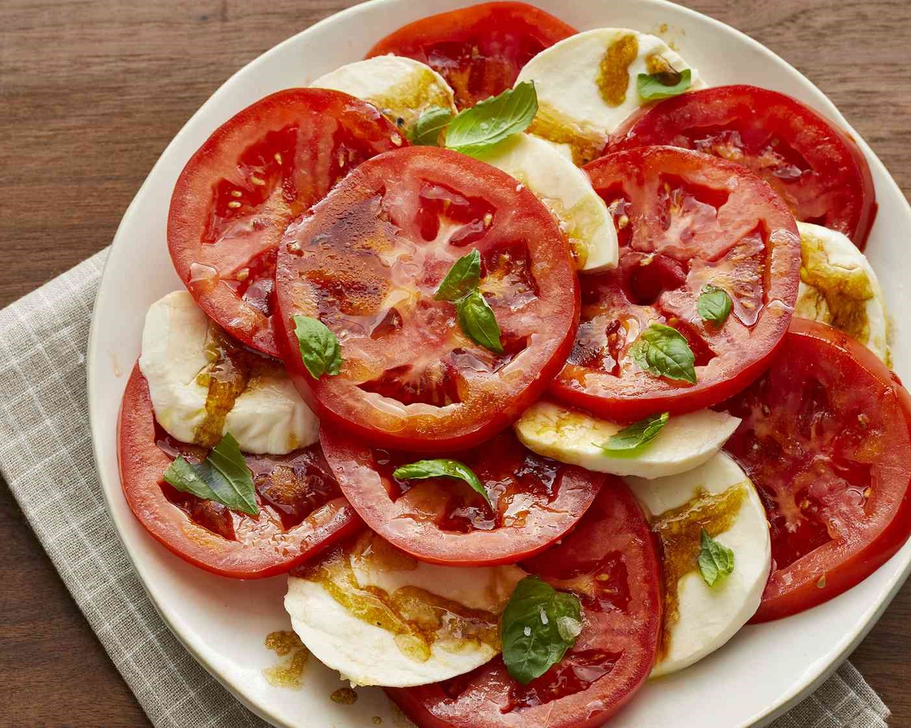

Cooker's Kitchen

Tomato and Mozzarella Salad
Ingredients:
- 2 pints cherry tomatoes, halved
- 8 ounces fresh mozzarella cheese, cut into bite-sized pieces
- 1/4 cup fresh basil leaves, chopped
- 2 tablespoons balsamic vinegar
- 2 tablespoons olive oil
- Salt and black pepper to taste
Instructions:
- In a large bowl, combine the halved cherry tomatoes, mozzarella cheese pieces, and chopped basil leaves.
- In a small bowl, whisk together the balsamic vinegar, olive oil, salt, and black pepper.
- Pour the balsamic vinaigrette over the tomato and mozzarella mixture and toss to combine.
- Let the salad sit at room temperature for 10-15 minutes to allow the flavors to meld.
- Serve the Tomato and Mozzarella Salad chilled or at room temperature, garnished with additional basil leaves if desired.